영국 해군 퀸 엘리자베스급 전함과 이란의 악연
게시: 2020-01-09T06:30:05+09:00
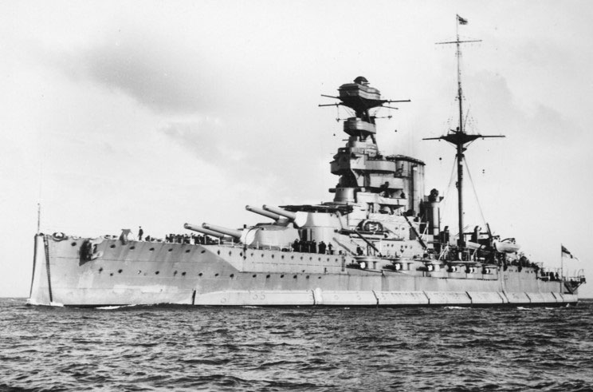
(HMS Warspite입니다. Warspite라는 것은 영어에 없는 단어이고, 영국 해군에서 전함 이름으로 몇 차례에 걸쳐 사용된 일종의 고유명사입니다. 어원은 불분명한데, 녹색 딱따구리를 지칭하는 이름이었다는 설도 있습니다. 즉, 적함에 딱따구리처럼 구멍을 뻥뻥 뚫으라는 뜻에서 나온 이름이라는 이야기지요.) 위 사진 속의 전함은 20세기들어 가장 유명한 영국 해군 전함 중 하나인 워스파이트(HMS Warspite) 호입니다. 워스파이트 호는 다음 두가지 점에서 20세기 초반 영국 해군을 상징한다고 할 수 있습니다. 1. 제1차, 2차 세계대전을 모두 몸으로 겪어낸 역사의 산 증인 2. 정점에 달했다가 몰락하는 영국 해군의 모습을 단면적으로 보여주는 상징성 워스파이트 호는 제1차 세계대전의 가장 큰 해전인 유틀란트 해전에 참전하여 독일 대양함대의 집중 포격 대상이 되기도 했고, 제2차 세계대전 때 지중해와 태평양 작전에도 모두 참여하여 독일 공군의 유도 폭탄인 FritzX를 3방이나 얻어맞기도 했지만 끝끝내 침몰하지 않은 역전의 용사입니다. (참고로 훨씬 나중에 건조되고 또 훨씬 더 큰 이탈리아 전함 로마 호는 단 두방의 FritzX에 침몰...)
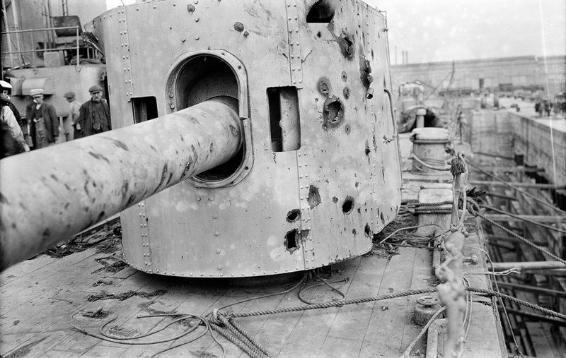
(1916년 유틀란트 해전에서 입은 워스파이트 호의 피해 중 일부입니다. 이 전투에서 워스파이트 호는 15발의 명중탄을 얻어맞고 심각한 피해를 입었지만 자력으로 영국으로 귀환할 수 있었습니다.)
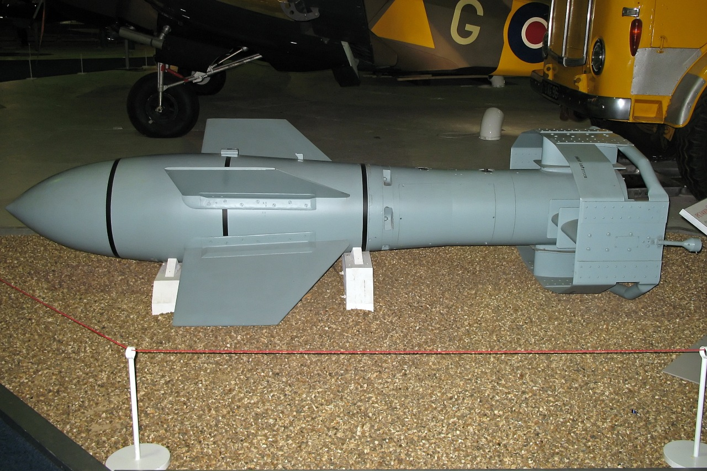
(코드네임 FritzX, 정식 명칭 FX1400, 제2차 세계대전 때 독일 공군이 보유했던 일종의 스마트 폭탄이지요.)
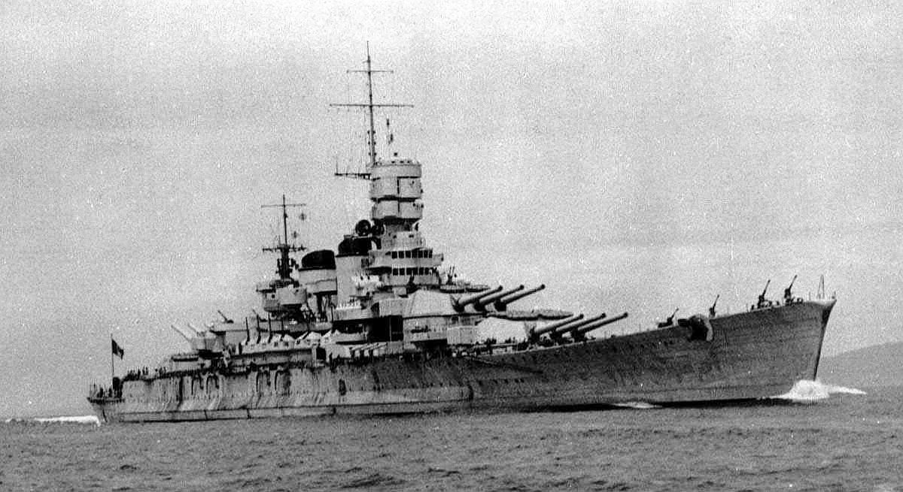
(이탈리아 전함 로마입니다. 딱 봐도 1913년에 진수된 3만3천톤짜리 워스파이트 호보다 훨씬 현대적이고 또 커보입니다. 실제로도 4만6천톤으로 워스파이트보다 훨씬 큰 전함입니다. 워스파이트가 로마보다 우수해서 살아남았다기보다는 사실 운이 더 좋았다고 봐야지요.)
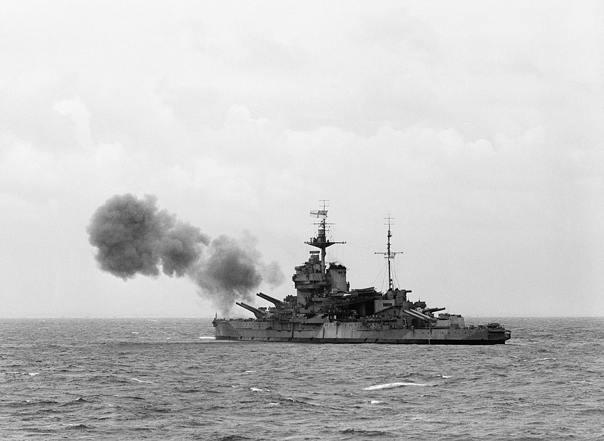
(노르망디 상륙 작전에서 독일군 진지를 향해 맹포격 중인 워스파이트 호입니다.)
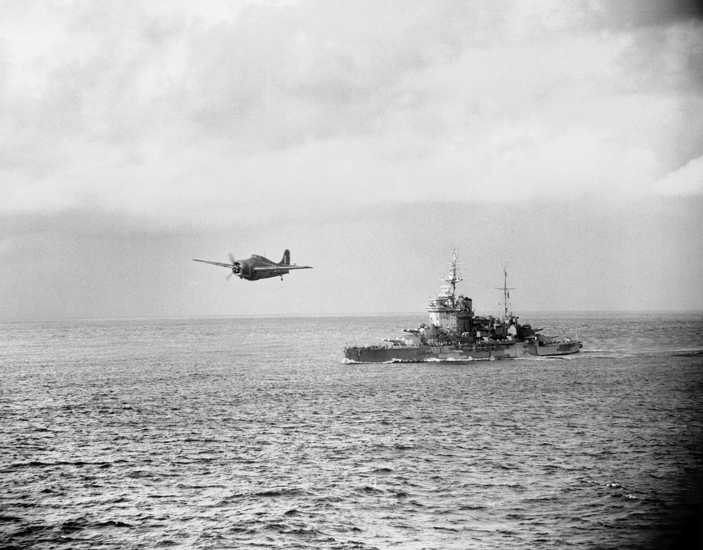
(1943년 지중해에서 작전 중인 HMS Warspite)
워스파이트 호는 얻어맞기만 한 것은 물론 아니고, 노르웨이 연안 해전에서는 독일군 구축함들을 말아드셨고, 지중해에서는 이탈리아 해군 일소에 혁혁한 전과를 세웠습니다. 노르망디 상륙 작전 때는 그야말로 포신이 닳아 못쓰게 될 때까지 지원 포격을 하기도 했습니다. (사실 이게 그렇게 대단한 것은 아니고 보통 전함들의 주포는 대략 200발 정도 쏘고 나면 강선이 다 닳기 때문에 정비를 해줘야 한다고 합니다.) 특히 제2차 세계대전 당시 지중해 칼리브리아 해전에서, 이탈리아의 쥴리오 케사레 호를 26,000 야드의 거리(약 24km, 거의 수평선 언저리)에서 명중시킨 것은 움직이는 함정에서 움직이는 함정을 명중시킨 것으로는 역사상 가장 먼 거리의 명중탄 기록으로 남아있습니다. 워스파이트 호는 퀸 엘리자베스급 전함입니다. 한마디로, 제1차 세계대전 직전에 만들어진 전함 중 가장 우수한 전함이라고 할 수 있습니다. (덕택에 디스커버리 채널의 Top10 수상 함정에도 올랐습니다.) 배수량이 대략 3만톤인 이 퀸 엘리자베스급 전함들의 특징을 한줄로 요약하면 이렇습니다. '기존의 아이언 듀크 클래스급 전함보다 더 뛰어난 화력과 스피드에도 불구하고, 기존 장갑 능력을 그대로 유지했다.' 그 이유는 2가지입니다. 먼저, 새로 개발된 15인치 주포를 장착하여, 기존의 13.5인치 포보다 포탑 수를 줄이고도 더 우월한 화력을 갖출 수 있었습니다. 이렇게 무게를 줄여서 기존의 18개보다 더 많은, 24개의 보일러를 장착하여 기존 아이언 듀크 클래스의 21노트보다 더 빠른 25노트로 스피드도 늘릴 수 있었습니다. 하지만 단순히 보일러 수자를 늘렸다는 것만으로는 이렇게 고속 순양함에 해당하는 속도를 낼 수는 없었습니다. 그 비밀은 바로 중유(Fuel Oil) 보일러였습니다. 당시 전함들의 보일러는 석탄을 연료로 썼습니다. 중유도 사용했습니다만, 그건 어디까지나 석탄을 보조하는 역할을 했을 뿐이었지요. 중유 보일러는 석탄 보일러에 비해 보일러의 무게 및 연료 무게도 더 가벼웠지만 출력은 오히려 훨씬 뛰어났습니다. 그래서 기존 아이언 듀크급 전함의 총 출력이 29,000 마력인데 비해, 퀸 엘리자베스급 전함은 무려 56,000 마력을 낼 수 있었습니다.
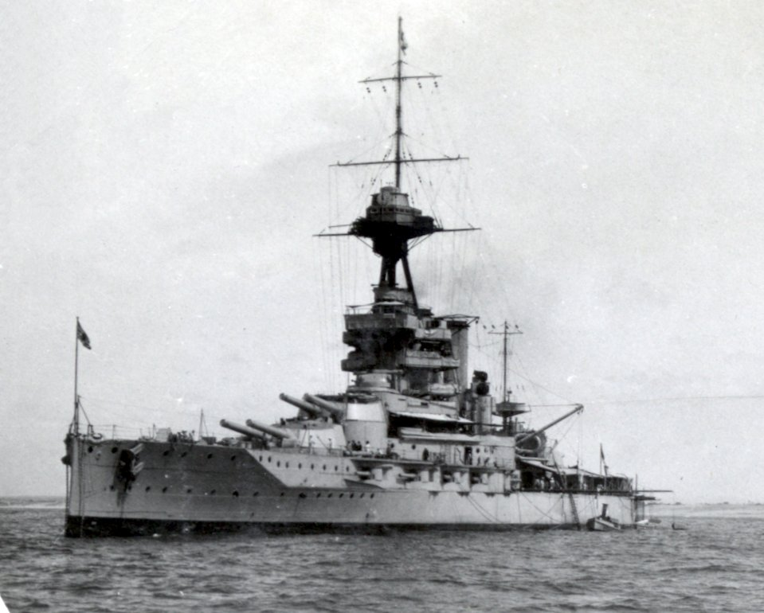
(아이언 듀크 급 전함 중 하나인 HMS Emperor of India 입니다. 엠퍼러 오브 인디아 호는 워스파이트 호와 같은 해인 1913년에 진수되어 제1차 세계대전에서 활약했습니다. 겉보기로는 퀸 엘리자베스 급 전함들과 그렇게 다른 점을 느끼지 못하실 겁니다. 그러나 그 낡은 석탄+중유 보일러의 한계를 극복하지 못하고 1932년 폐기처분 되었습니다. 자동차든 비행기든 배든, 엔진이 그렇게 중요합니다.)
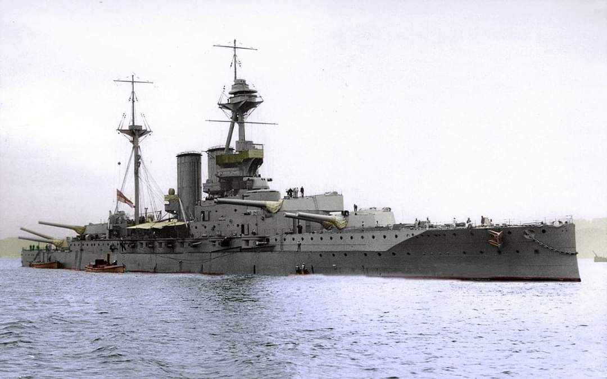
(이건 HMS Valiant로서, HMS Warspite와 같은 급 전함입니다. 사실 이렇게만 보면 아이언 듀크급과 퀸 엘리자베스급의 차이를 보시기 어렵습니다.)
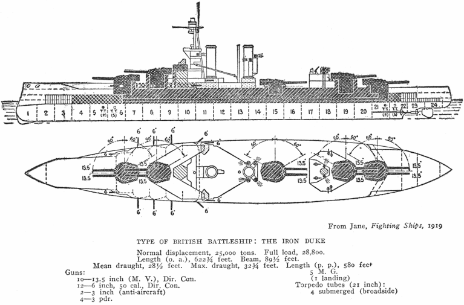 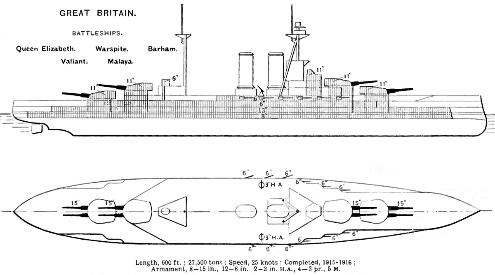
(하지만 이렇게 청사진을 보시면 아이언 듀크급과 퀸 엘리자베스급의 차이를 확실히 보실 수 있습니다.)
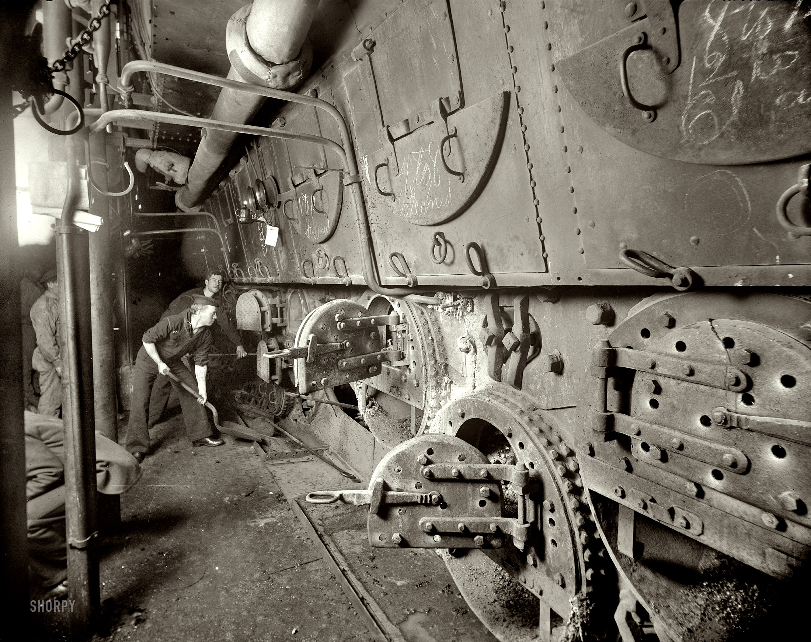
(이건 1893년에 진수된 미해군의 두번째 전함 USS Massachusetts (BB-2)의 엔진실입니다. 당시 석탄 보일러를 쓰던 기관실은 이렇게 생겼습니다.)
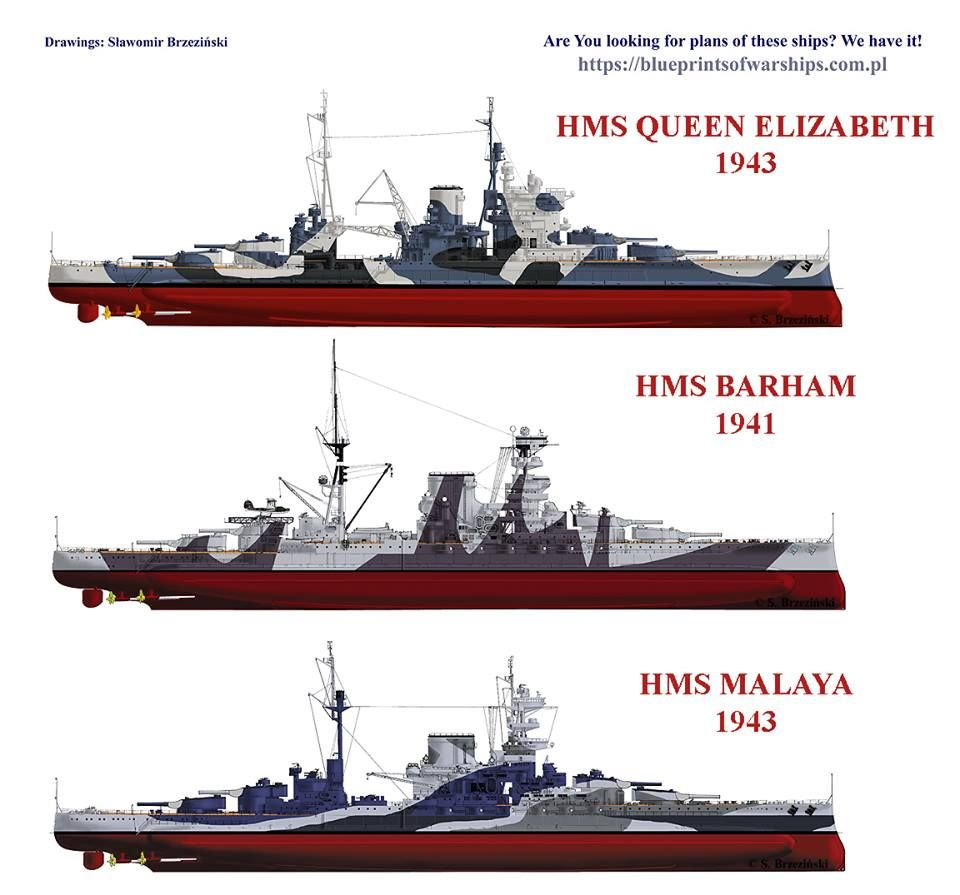
(위 그림에 나온 전함들은 모두 퀸 엘리자베스 급 전함들입니다. 모두 제1차 세계대전 이전에 만들어졌지만 현대화를 통해 제2차 세계대전에서도 활약했습니다.) 하지만 퀸 엘리자베스급이 도면에서 그려지고 있던 1912년 당시 영국 해군성의 수장인 윈스턴 처칠 경은 선뜻 중유 보일러를 채택할 수가 없었습니다. 이유는 간단했습니다. 당시 영국에서 석탄은 많이 났습니다만 석유는 나지 않았던 것이지요. 이건 단순한 경제와 산업의 문제가 아니라 국가 안보의 문제였습니다. 아시다시피 19세기 후반부터 영국을 비롯한 유럽에서는 많은 가정에서 조명용으로 등유(kerosIne)를 사용했습니다. 이 등유는 처음에는 석유에서 정제한 것이 아니었습니다. 당시 유럽에서 풍부하게 채굴되었던 석탄을 정제하여 만든 것이었습니다. 2차 세계대전 때, 독일도 석탄을 정제하여 가솔린과 디젤을 뽑아내었지요. 그러다가 1850년대 들어서서 오늘날 루마니아 지역 및 미국 펜실바니아 쪽에서 유전이 발견되면서 석유를 증류하여 등유 및 중유를 얻게 되었습니다. 1860년대에는 세계 석유 생산량의 90%가 카스피 해 연안, 오늘날 아제르바이잔의 수도인 바쿠 인근에서 채굴되었습니다. 즉, 당시 유럽 세계에서 석유의 주공급원은 러시아의 영향권에 있던 동유럽 쪽이었습니다.
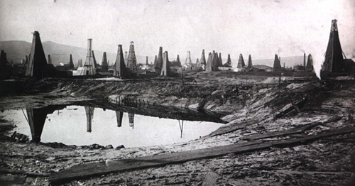
(1900년대 초반 바쿠의 유정들...) 석유는 중동에서 나는 거 아니냐고요 ? 맞습니다. 고대 바빌로니아의 성벽을 쌓는데도 천연 타르가 사용될 정도로, 중동에는 석유가 많이 났습니다. 하지만 의외로 산업용으로 사용될 만한 진짜 유전이 터진 것은 20세기 들어서서 입니다. 가령 쿠웨이트에서 유전이 발견된 것은 1938년이었습니다. 중동에서 가장 먼저 산업용 유전이 발견된 곳은 페르시아, 즉 이란이었습니다. 바로 1908년이었지요.
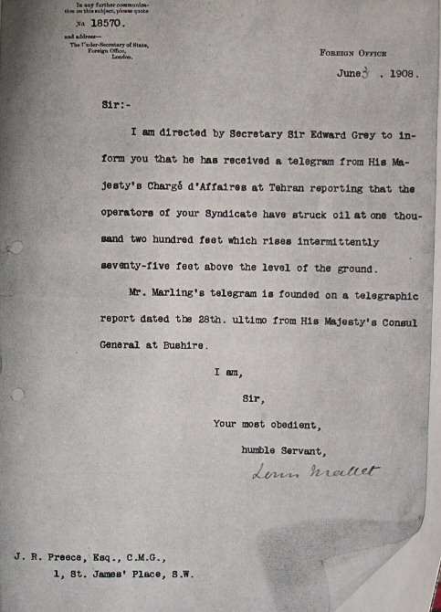
(이란에서의 석유 시추 성공을 알리는 1908년 6월 3일자 편지) 타이밍이 기가 막혔습니다. 바로 3년 뒤, 퀸 엘리자베스급 전함의 설계도가 그려질 때, 영국 해군에게 갑자기 페르시아가 매우 중요한 지역이 되었던 것입니다. 해군성 장관 윈스턴 처칠 경은 의회를 설득하여 영국-페르시아 석유회사(Anglo-Persian Oil Company)의 지분 51%를 사들입니다. 이때부터 페르시아의 비극이 시작됩니다. 원래 페르시아 지역은 19세기 초까지도 영국의 관심 밖이었습니다. 그러다가 나폴레옹이 이집트를 침공하면서, 금쪽같은 인도 식민지를 지키기 위한 전초 기지로서 관심을 가지기 시작합니다. 반면 러시아는 부동항을 얻기 위해 끊임없이 남하하며 페르시아를 계속 건드렸는데, 러시아가 나폴레옹에 굴복하여 프랑스 편에 서느냐 영국과 연합하느냐에 따라 페르시아는 영국과 러시아 사이에서 눈치를 봐야 했습니다. 그러나 여전히, 영국에게 있어 페르시아는 인도로 가는 길목일 뿐이었습니다. 그러나, 퀸 엘리자베스급 전함이 취역하게 되면서, 페르시아는 영국 해군에게 있어, 더 나아가 대영제국의 안보에 있어 매우 중요한 전략 요충지가 되어버린 것입니다. 덕분에 1, 2차 세계대전 내내 페르시아는 영국과 소련의 간섭에 시달리며 반점령 상태가 되어 버립니다. 다행인지 불행인지 자체 유전을 가지고 있던 소련보다는 영국의 간섭이 훨씬 심했습니다.
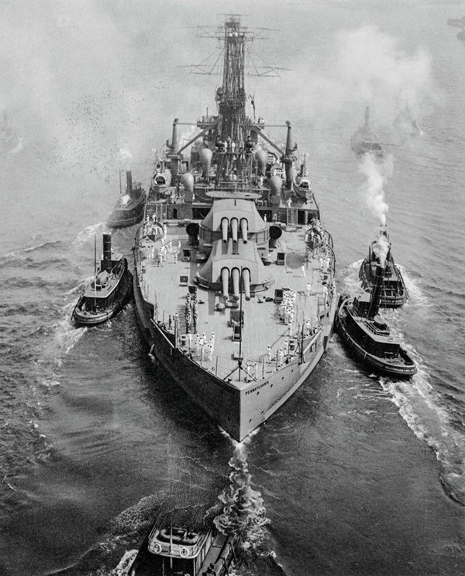
(영국이 자국령에서 석유가 나지 않는다는 이유로 중유를 연료로 하는 전함 채택을 망설인 것은 결코 엄살이 아니었습니다. 위 사진 속 전함은 1915년 진수된 미해군 전함 USS Pennsylvania (BB-38)입니다만, 이 당당한 전함은 제1차 세계대전 동안 유럽에는 파견되지 못했습니다. 이 펜실바니아 호도 중유를 연료로 하는 전함이었는데, 당시 유럽에는 중유 공급 사정이 여의치 않았기 때문이었습니다. 펜실바니아 호가 유럽에 다녀온 것은 우드로 윌슨 대통령이 평화 조약을 위해 유럽을 방문할 때 그 호송단의 일원으로서였습니다.)
신이 페르시아, 즉 이란에게 준 선물인 석유는 페르시아 사람들에게는 정작 별 혜택을 주지 못하고, 영국-페르시아(이란) 석유회사를 통해 서방 세계로 빨려나갔습니다. 과거에 처칠이 투자한 영국 자본 때문이었지요. 그러다가, 마침내 이란에도 똑똑한 (혹은 멍청한) 정치가가 나타납니다. 바로 무하마드 모사데크(Muhammad Mosaddeq) 였습니다.
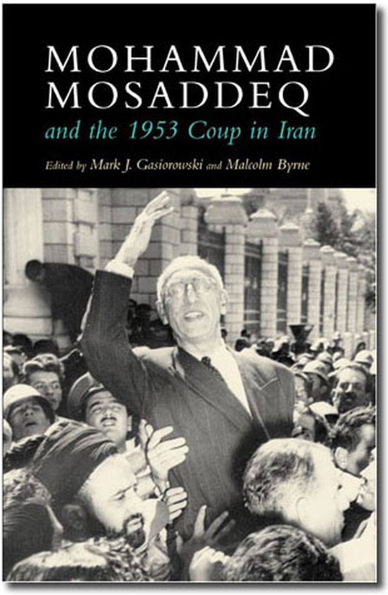
(오해하지 마십시요. 전 저 책 안 읽었습니다.) 이 양반은 팔레비 왕조 하에서 민족주의 세력으로 가득찬 의회를 등에 업고 총리가 되었는데, 당연히 대단한 민족주의자였습니다. 이 양반이 정말 똑똑하다고 (혹은 멍청하다고) 했던 것은 퀸 엘리자베스급 전함을 위해 만들어진 영-이란 석유회사를 1951년 일방적으로 국유화 해버렸기 때문이었습니다. 당시 2차 세계대전의 폐허에서 비틀거리느라 노쇠함이 역력했던 영국을 물로 봤던 것이었지요. 사실 제대로 봤습니다. 영국은 일단 헤이그의 국제 사법 재판소에 이 사건에 대한 소송을 올렸다가 기각당했습니다. 대단한 떡을 빼앗긴 영국은 그 정당성 여부와 상관없이 격노했습니다. 결국 영국 정부가 '천조국' 미국에게 이란을 침공하자고 길길이 뛰었지만, 당시 세계의 제왕이었던 미국 트루먼 대통령은 '세계 경찰 미국이 그걸 허용할 수는 없다'며 영국을 말렸습니다. 당시 트루먼은 한국 전쟁으로 가뜩이나 골치아팠는데, 소련을 자극할 여력이 없었지요. 더군다나 영국만 좋은 일을 그렇게 해주겠습니까 ?
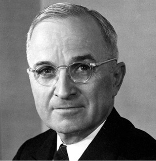
(미국 대통령 트루먼. 이 사람은 자선사업가가 아닙니다.) 하지만 강대국들이 약소국을 칠 때는 군대로만 치는 것은 아니었습니다. 일단 영국은 미국에게 모사데크가 소련을 끌어들이려 한다고 모함을 했습니다. 그러다가 1953년, 이란의 영웅이 된 모사데크는 내친 김에 서방의 푸들이나 다름없던 국왕을 강요하여 나라 밖으로 쫓아내는 사건까지 터집니다. 여기까지는 좋았으나, 정말 이란이 소련 쪽으로 넘어갈 것을 두려워한 아이젠하워 대통령 당선자는, CIA 작전명 에이잭스(Ajax)를 승인합니다. 이 CIA 작전에 따라 이란 왕당파가 쿠데타를 일으켜 무함마드 레자 국왕이 복귀했고, 모사데크는 감옥 신세를 지게 되었습니다. 이때 CIA가 벌인 공작은 유치하다면 유치하고 무섭다면 무서운 것이었습니다. 바로 알바생 동원 ! 국왕 만세를 외치며 폭력 시위를 벌인 알바생들을 거리에 풀어댔던 것입니다. 이렇게 알바생을 동원하여 분위기를 조성한 뒤, 미리 매수해둔 일부 군 병력으로 모사데크를 체포한 것이지요. 당시 길거리 소요에서 희생된 알바생들의 주머니에는 동일한 액수의 지폐가 많이 발견되었다고 합니다. CIA 요원들이 현장에서 알바생들에게 봉투를 나눠줬던 모양이더라구요. 아무튼 이렇게 영-이란 석유회사를 되찾은 영국은 미국에게, 이란 석유의 40%를 떼주는 것으로 댓가를 치뤄줍니다. 결국 모든 것은 돈으로 연결되는 거지요.
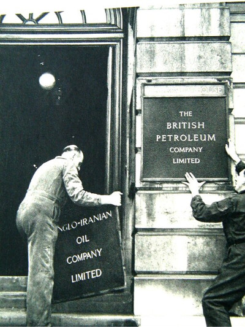
(이때 영국-이란 석유회사는 British Petroleum Company로 이름을 바꿉니다. 이름이 낯설다고요 ? BP라고 하면 아마 좀더 익숙하실 겁니다.)
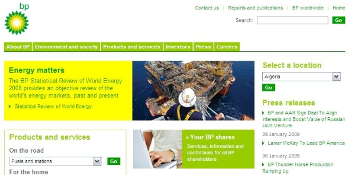
이후 이야기는 여러분도 잘 아시는 것입니다. 결국 호메이니에 의한 이슬람 혁명, 이란 미 대사관의 인질 사태, 이란-이라크 전쟁, 9.11 사태, 아프간 전쟁, 이라크 전쟁... 요즘 이란과 미국 사이가 다시 좋지 않습니다. 저는 이란에 핵무기가 있냐 없냐보다는, 이란에 석유가 많다는 사실이 더 걱정스럽습니다. 북한은 이미 핵무기를 만들었지만 정작 미국은 크게 신경을 안쓰쟎습니까 ? 북한과 미국 사이에는 전쟁이 날 것 같지는 않습니다만, 이란과 미국 사이는 정말 걱정스럽습니다. 사상과 믿음, 더 나쁘게는 돈 때문에 사람들이 죽고 죽이는 일이 없었으면 합니다. ** 여기까지는 아주 오래 전에 썼던 글인데, 요즘 이란 상황을 틈타 재업했습니다.
아래는 최근에 읽은 어떤 정치 평론가의 글인데, 요약하면 이번에 암살된 솔레이마니는 살아있을 때보다 죽은 뒤에 미국에게 더 무시무시한 적이 될 것이기 때문에 이 암살은 트럼프의 큰 실책이 될 것이라는 주장입니다.
https://medium.com/@JohnWight1/the-assassination-of-soleimani-what-would-crassus-say-2b1d5677a6bc?
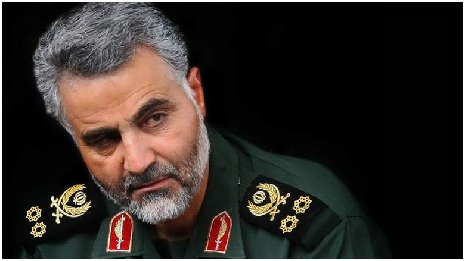
(다른 건 몰라도 남자는 역시 수염...)
위 기사의 주장과 비슷한 내용을 전에 중국 역사책 어디에서인가 읽은 적이 있습니다. 위진남북조 시대인지 5호16국 시대인지 기억이 나지 않습니다만, 중국이 분열되어 있던 시절 어떤 나라에 있었던 훌륭한 재상의 이야기였습니다. 이 사람 덕분에 나라가 크지는 않아도 그 나라는 꽤 단단하게 잘 지켜졌습니다. 이 재상이 죽은 뒤 시간이 좀 흘러 빈틈이 생기자, 때를 기다리던 이웃 나라가 침공을 해왔습니다. 이런 위기 속에서 구심점이 없던 이 나라의 조정은 '형세가 위중하니 화평을 청하자'라는 파와 '불리하더라도 끝까지 싸우자'라는 파로 나뉘어 갑론을박만 계속 하고 있었습니다. 이때 조정 신하 중 하나가 이렇게 질문을 던졌습니다.
"그 재상께서 살아계셨다면 그 분은 이 상황에서 어떻게 하셨을까 ?"
그 재상의 평상시 사람됨을 잘 알고 있던 조정 신하들은 잠시 생각하다가 곧 모두 이렇게 동의했습니다.
"그 분이라면 끝까지 싸우셨을 것이다."
이렇게 결론이 나자 분열되었던 조정이 단합하여 싸움터로 나아갔고, 결국 침략군을 무찔렀다고 합니다.
살아있는 사람에게는 누구나 도덕적 약점이 있고 실수도 하며 또 그 능력은 필부의 능력에 불과합니다. 그러나 죽은 사람에게는 더 이상 도덕적 약점이나 실수가 없으며, 또 어떻게 죽었느냐에 따라 죽은 뒤의 능력이 훨씬 더 크기도 합니다. 저도 저 솔레이마니라는 사람은 전혀 모르지만, 이번 일은 트황상이 실수하신 것 같습니다.
위 기사 중 미국-이란 갈등과는 무관하게, 그 중에서 매우 공감이 가는 문구가 하나 있어서 공유합니다. 몰고다니는 자동차나 들고다니는 가방 같은 물질적 소비를 통해 자신의 가치가 입증된다고 믿는 분들께 꼭 보여드리고 싶은 말입니다. "사람의 가치는 그의 은행잔고나 저택의 크기로 측정되는 것이 아니라 자아보다 더 큰 대의에 대한 신실함으로 정해진다. 이 이란인이 가진 것을 살 만한 돈은 트럼프에게는 죽었다 깨도 없다."
Source : https://en.wikipedia.org/wiki/HMS_Warspite_(03) https://www.pinterest.co.kr/pin/22588435618826108/?lp=true https://en.wikipedia.org/wiki/Iron_Duke-class_battleship https://en.wikipedia.org/wiki/HMS_Emperor_of_India https://www.pinterest.pt/pin/2111131064442996/